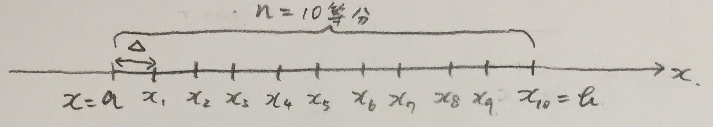
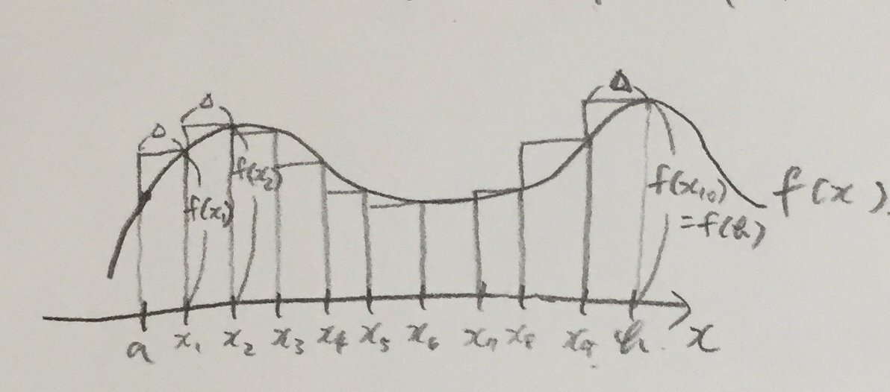

まず、積分の定義は次のようになっています。
\begin{align} \int_{a}^{b} f(x)dx = \lim_{n \to \infty} \sum_{k=1}^n f(x_k) \Delta ・・・(式1) \end{align}右辺の意味をわかりやすくするために、次のような数直線を考えます。
積分する範囲をn等分し、1区間の幅を\( \Delta(=\frac{b-a}{n}) \)とします。
このとき、(式1)の右辺の和は、n=10のとき、
\begin{align} \sum_{k=1}^{10} f(x_k)\Delta = f(x_1)\Delta + f(x_2)\Delta + ・・・ + f(x_{10})\Delta ・・・(式2) \end{align}となり、下図の長方形の和になります。
パラメータを設定して、右辺の値を計算してみましょう。
n=5、n=10、n=20と変化をみてみましょう。